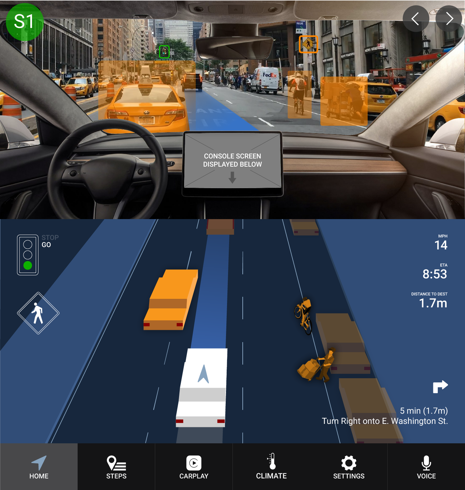
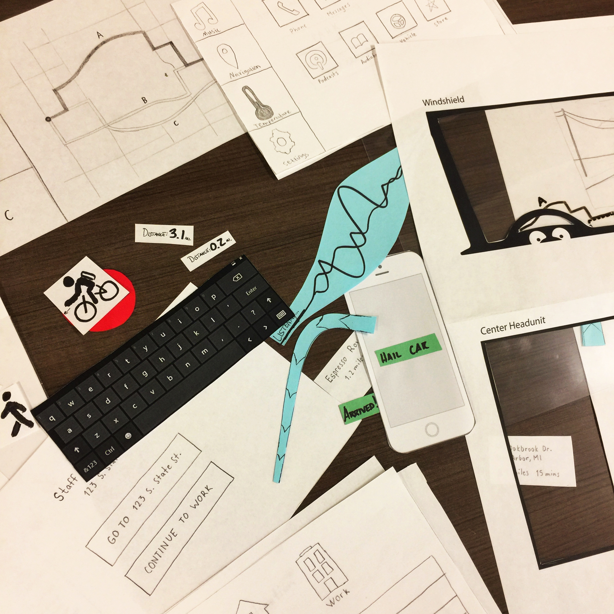
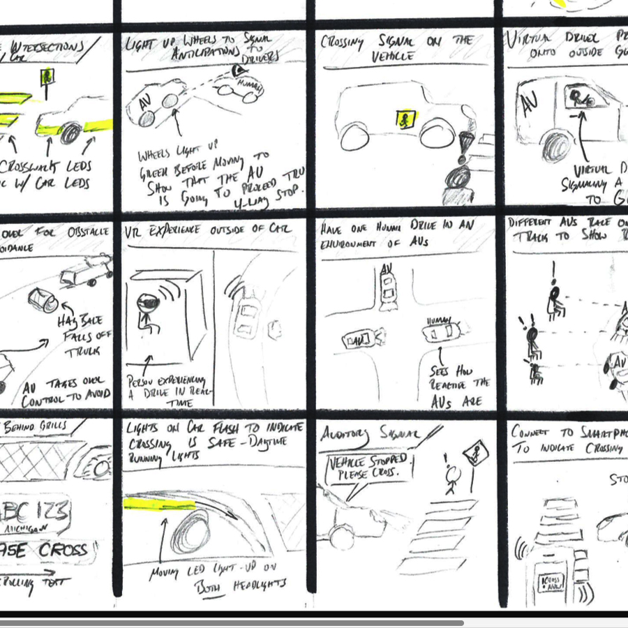
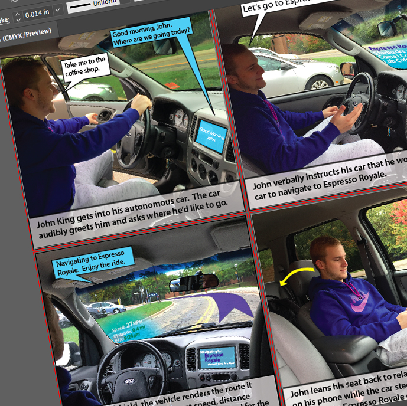
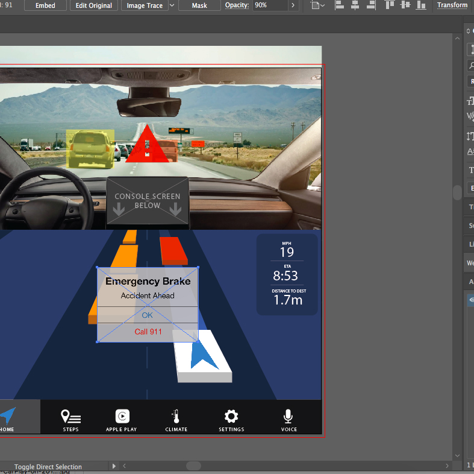
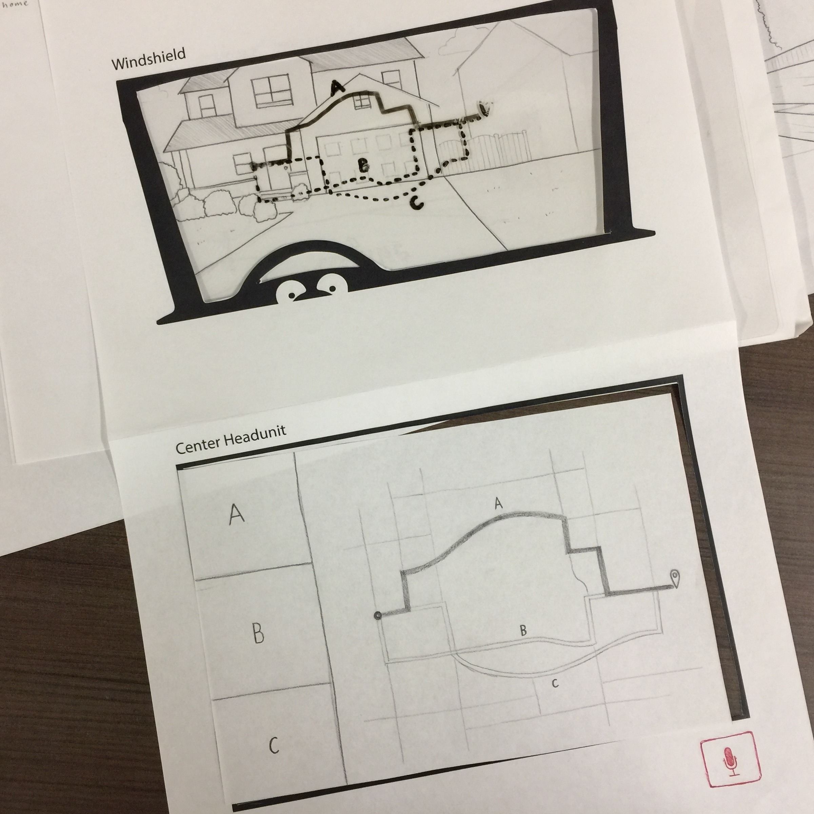
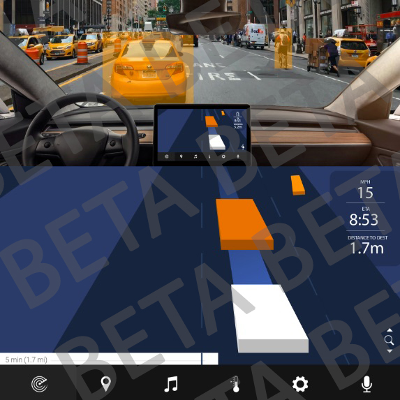

With Autonomous Vehicles (AVs) on the rise, how can we shape an in-vehicle user experience that creates a bridge of trust between passengers and the car? AVs may seem like a black box to many potential users. What my team was working towards in this project was to develop an interface for a fully autonomous vehicle that conveys relevant information to the passengers that shows not only what the car is reacting to, but also what the car is anticipating in the environment.
Across the majority of the AV stakeholders, there is a fear of autonomy on the road. Potential stakeholders would be anyone who might use an autonomous car for transport - i.e. people who use public transit, people who use Uber/Lyft, elderly people, children who need to get to school. There are a lot of personas and scenarios that you could make up for the autonomous vehicle user, and I think that’s why it’s so interesting to me. Tech that would have to be focused on is both in-vehicle passenger notification systems, as well as external notification systems that could notify pedestrians.
For the sake of this project, we made our target audience elderly people who use a personal to get around. We chose this audience for two reasons: (1) people 65+ years old are consistently responsible for roughly 10% of all auto accidents, and (2) elderly people are more likely to be resistant to new technology than younger people - it would be more of a challenge to get them to use and trust an autonomous car.
This project was for the School of Information course SI 482: Interaction Design Studio. The goal was to choose a project and get practice working through all of the steps of the design process. Each step our group took is detailed a bit below.
Our final product was a high-fidelity prototype of what our product would look like in a vehicle. We displayed the windshield highlighting system working in conjunction with the main infotainment screen in the car to convey important information to the front passengers. The first two slides in the photos above show what the final prototype looks like.
You can interact with my team's final digital prototype in InVision here.
PROTOTYPE NOTES:
The prototype consists of 4 different scenes - highway, night, rain, and urban driving environments. The user can switch between the scenes by using the arrow buttons in the top right corner. External scenarios can be activated by clicking the green buttons in the top left corner of the screens. You can click anywhere at any time to have the clickable hotspots lights up.
Note that those buttons would not be in the actual, physical vehicle interface - they're just there to interact with the digital prototype.